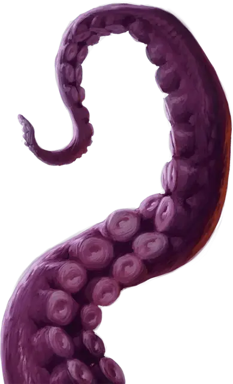

Гигантский осьминог
Giant Octopus
Большой Зверь, без мировоззрения

Класс Доспеха 11
Хиты 52 (8к10 + 8)
Скорость 10 футов, плавая 60 футов
| мод | спас | ||
|---|---|---|---|
| СИЛ | 17 | +3 | +3 |
| ЛОВ | 13 | +1 | +1 |
| ТЕЛ | 13 | +1 | +1 |
| мод | спас | ||
|---|---|---|---|
| ИНТ | 4 | −3 | −3 |
| МДР | 10 | +0 | +0 |
| ХАР | 4 | −3 | −3 |
Навыки Восприятие +4, Скрытность +5
Чувства тёмное зрение 60 футов, пассивное Восприятие 14
Опасность 1 (200 опыта)
Бонус мастерства +2
Среда обитания Под водой
Особенности
Задержка дыхания. Находясь вне воды, осьминог может задержать дыхание на 1 час.
Подводный камуфляж. Осьминог совершает с преимуществом проверки Ловкости (Скрытность), когда находится под водой.
Подводное дыхание. Осьминог может дышать только под водой.
Действия
Щупальца. Рукопашная атака оружием: +5 к попаданию, досягаемость 15 футов, одна цель. Попадание: Дробящий урон 10 (2к6 + 3). Если цель — существо, она становится захваченной (Сл высвобождения 16). Пока цель схвачена, она опутана, а осьминог не может использовать щупальца на другой цели.
Чернильное облако (перезаряжается после короткого или продолжительного отдыха). Чернильное облако с радиусом 20 футов исходит от осьминога, если он находится под водой. Эта местность становится сильно заслонённой на 1 минуту, хотя сильное течение может развеять это облако. Выпустив чернила, осьминог может бонусным действием совершить действие Рывок.